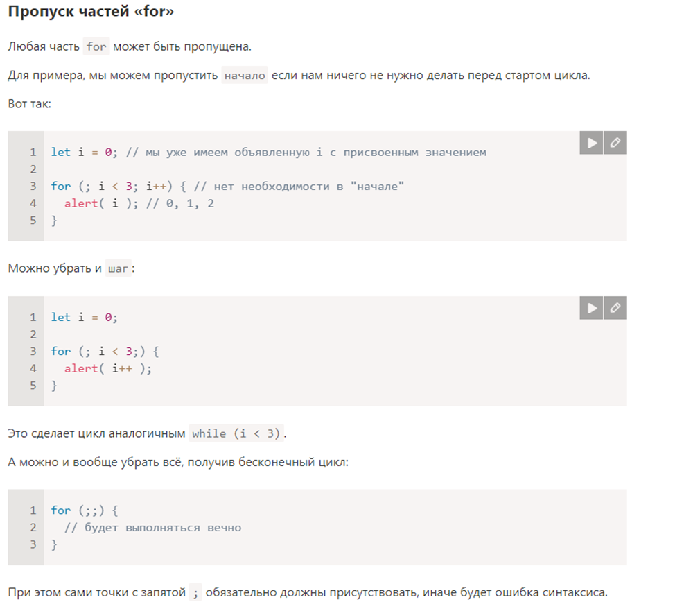

Приветствую
Ответы на вопросы
- Из скольких частей состоит основной цикл?
Ответ: Цикл состоит из условия и тела.
- Какое количество уровней вложенности могут иметь циклы?
Ответ: Циклы могут иметь любое количество уровней вложенности, но они ухудшают читаемость цикла.
- Если switch находится внутри функции, какая инструкция может использоваться для выхода из него?
Ответ: Для выхода из switch может использоваться не только инструкция break, но также и инструкция return (если switch находится внутри функции) или continue (если switch находится внутри цикла).
- Можно ли пропускать части for? Что получится, если написать for(;;)?
Ответ:
 - Самостоятельно разберитесь, как работает цикл while и приведите два примера кода с его использованием.
Ответ:
- Как можно принудительно остановить выполнение цикла?
Ответ: Мы можем выйти из цикла в любой момент с помощью специальной директивы break.
- При помощи цикла for выведите чётные числа от 2 до 10.
Ответ:

- Если тело цикла состоит лишь из одной инструкции, мы можем опустить фигурные скобки {…}?
Ответ:

- Что выведет цикл?

Ответ: 0 1 2
- Оба цикла выводят в консоль одинаковые значения или нет?

Ответ:В первом случае выводит в консоль 1 2 3 4, во втором 1 2 3 4 5.